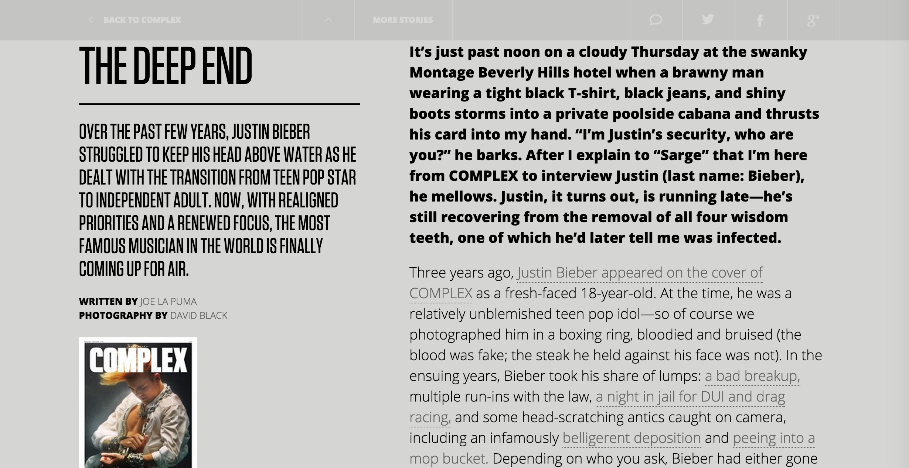

While the Complex Magazine homepage and main site itself is nothing too fancy, I absolutely love how they have been creating their cover story pages for the past few months. A link on the homepage leads to an artistically designed way of showing not only moving images of the subject that react with mouse movement and scrolling, but also shows the interview and highlights key parts and phrases. It's part interview, part photography, part GIF, part interactive media, all with a wonderfully designed aesthetic.  back to homepage